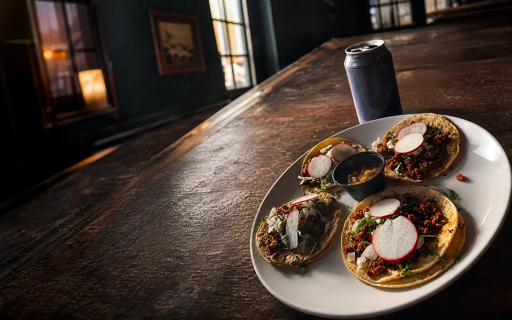
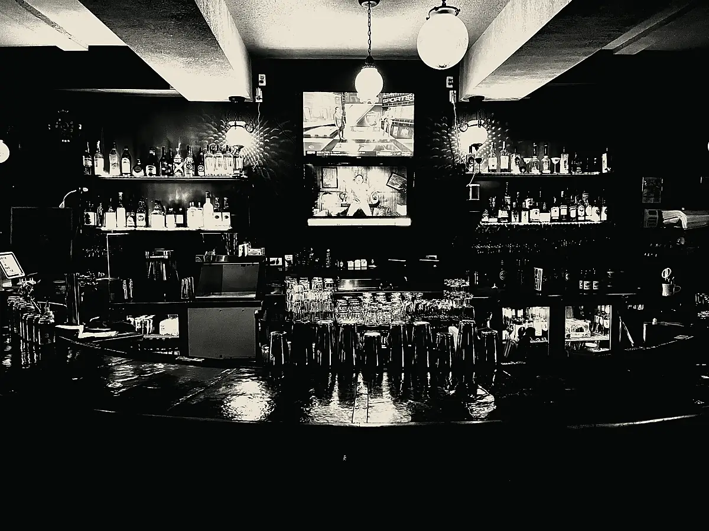
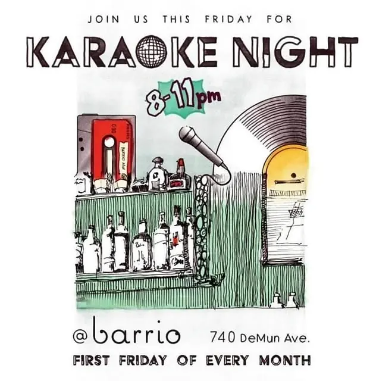
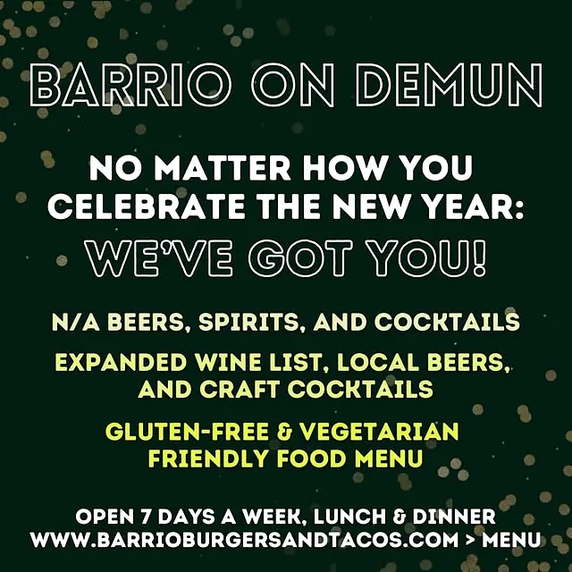
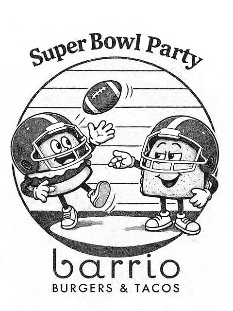
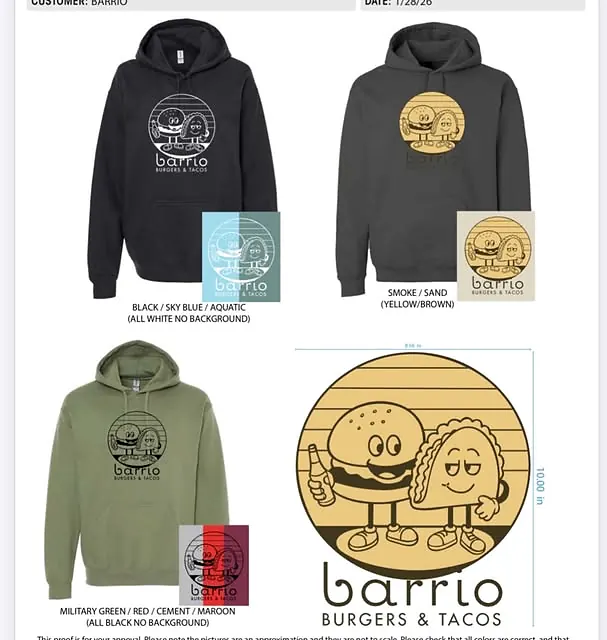
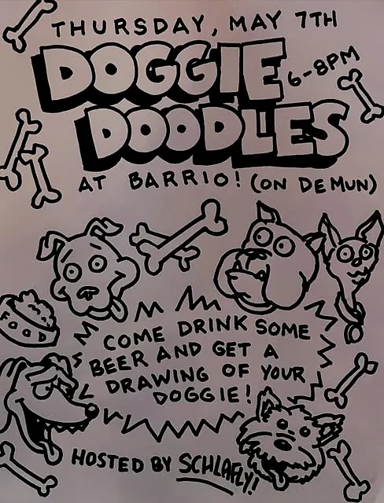

Outlaw Burger
Pepper Jack, bacon, pickles, fried jalapeños, onion rings and house BBQ.

DeMun · Clayton, Missouri
Street tacos, smash burgers and cocktails made for the whole neighborhood.
Kid-friendly dining · Dog-friendly patio

The neighborhood’s living room
Barrio is built for the everyday reasons people gather: lunch with the family, game night with friends, a patio stop with your pup, or a round that turns into one more.
More than a meal





Open every day
Walk in from 11am, settle into the patio, or order ahead for an easy pickup.
Kitchen and event details may change on holidays. Check official channels for the latest.